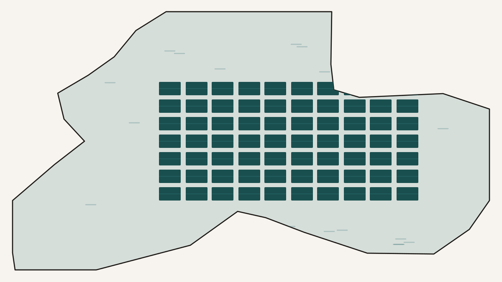

Can Floating Solar Power a City and Save Its Water?
California is short of two things at once: clean electricity and water. Most fixes help with one and ignore the other, or trade one against the other — a desert solar farm makes power but eats land and does nothing for the water table. Floating photovoltaics are unusual because they help with both. Cover part of a reservoir with solar panels and you generate electricity from an otherwise idle surface, and, because the panels shade the water, you also cut how much of it evaporates away under the sun. Power and water, from the same installation. A student I was working with wanted to know what that dual benefit would actually amount to across California's reservoirs — and the more interesting thing he found was not a number but a question the number cannot answer on its own.
The setup is a deterministic model rather than a field trial: take the ten largest California reservoirs, imagine covering a tenth of each one with panels, and compute two outputs from public data. The first is electricity, estimated from each site's local solar yield and the area of panels it can hold. The second is water saved, estimated from each site's evaporation rate and how much of that a shading layer suppresses. Add it all up and the totals are substantial — on the order of twelve thousand gigawatt-hours of electricity a year and thirty-odd thousand megalitres of water kept in the reservoirs rather than lost to the air. As a demonstration that the dual benefit is real and large, the model does its job in the first paragraph of results.
Then it gets interesting, because a project that produces two different goods does not have a single "best" site. It has as many rankings as you have ways to keep score, and they do not agree.
Every reservoir plotted by the two things floating solar delivers: electricity up the side, water saved along the bottom. Shasta sits furthest out — it is biggest on both, because it is simply the largest lake. But "best" as a ratio is a slope, not a distance: the steepest line from the origin, through Lake Berryessa, marks the site that generates the most energy per unit of water it saves. The biggest producer and the most efficient one are not the same reservoir.
Score the sites by raw electricity and the answer is almost boring: the biggest reservoir wins, because energy scales with how many panels you can float, which scales with surface area. Shasta, the largest, tops the list; the local sunniness of a site barely moves the ranking next to the sheer size of the lake. But raw generation is the wrong yardstick for a dual-purpose machine, because it ignores half of what the machine is for. So the study proposes a different score — energy generated per unit of water saved — and by that measure a different reservoir wins. Lake Berryessa, which is not the largest, comes first, because it sits where the baseline evaporation is relatively low. That sounds backwards until you see the arithmetic: a site with low evaporation saves less water per hectare of panel, so each megalitre it does save is "bought" with more electricity generated alongside it, and the ratio of energy to water comes out high. The biggest producer is not the most efficient dual-purpose site. Which reservoir is "best" flipped the moment the yardstick did.
A third metric reshuffles the middle of the table again, and this one is the most physical of the three. Electricity is only useful where people are, and every kilometre of transmission line bleeds a little of it away as heat. Fold that in — charge each site a small penalty per kilometre to its nearest city — and reservoirs that generate more can end up delivering less. A lake thirty-seven kilometres from Sacramento climbs past one a hundred and twenty-one kilometres away, even though the distant lake produces more power, because so much of that far-away power never arrives. The average site loses only a couple of per cent to the wire, which sounds negligible until you multiply it by a large plant: for the most remote reservoir it works out to tens of gigawatt-hours of clean electricity vanishing into the transmission lines every year. Remoteness is a quiet tax that raw generation figures never show.
None of these three rankings is wrong. They are answers to three different questions — how much power, how much power per drop of water, how much power actually delivered — and the point of the study is that you cannot avoid choosing which question you are asking. That choice is not a technicality downstream of the "real" analysis; it is the analysis. Conventional energy planning quietly picks one answer by default: it optimises energy per dollar, which is why it keeps building solar in cheap empty desert. Put water in the denominator instead and a completely different map lights up — one where a reservoir is not just a surface to rent but a dual-purpose asset, a power station that also holds back a drought. The contribution here is not the discovery that Berryessa scores well. It is the yardstick that makes Berryessa's kind of value visible at all, because a benefit you never put in the denominator is a benefit your ranking will always throw away.
I should be plain that this is a model built from annual averages, not a measurement of any real installation, and its specific numbers should be read as illustrations of the framework rather than a procurement list. But the framework is the durable part, and it generalises well past reservoirs. Whenever an intervention does two things at once — generates and conserves, treats and prevents, earns and protects — there is no single scalar that ranks the options, and the most consequential modelling decision is the humblest-looking one: what you divide by. Get the numerator and the denominator right and the arithmetic will faithfully tell you which site wins. It just cannot tell you which question you should have been asking, and that was never the model's job. It was yours.
An honest caveat that should go before any stronger claim
The rankings here are the output of a deterministic desktop model, and every input is an approximation. Energy is estimated from annualised solar climatology, so it misses seasonal swings, heatwave temperature penalties, and — most importantly in California — the drought drawdowns that shrink a reservoir's surface and change both how many panels it can hold and how much it evaporates, the two quantities the whole analysis rests on. The water-saving figures ride on an evaporation-suppression factor that the literature places anywhere from twenty to sixty per cent, an enormous range that no single site-specific measurement here pins down. The transmission penalty is a flat loss per straight-line kilometre, which ignores real grid capacity, substation limits, and the actual routing of power lines. And coverage was fixed at a tenth of each surface by assumption, not optimised. What the study earns is not "build at Berryessa" but something more useful and more portable: a demonstration that for a dual-benefit technology the choice of efficiency metric drives the siting decision, that transmission distance can quietly overturn a generation-based ranking, and that scoring energy against water saved surfaces priorities a generation-only or dollar-only analysis would never reveal. Turning that into a real siting recommendation would need the time-varying hydrology, dynamic grid modelling, and on-site evaporation measurements the model deliberately leaves for later.